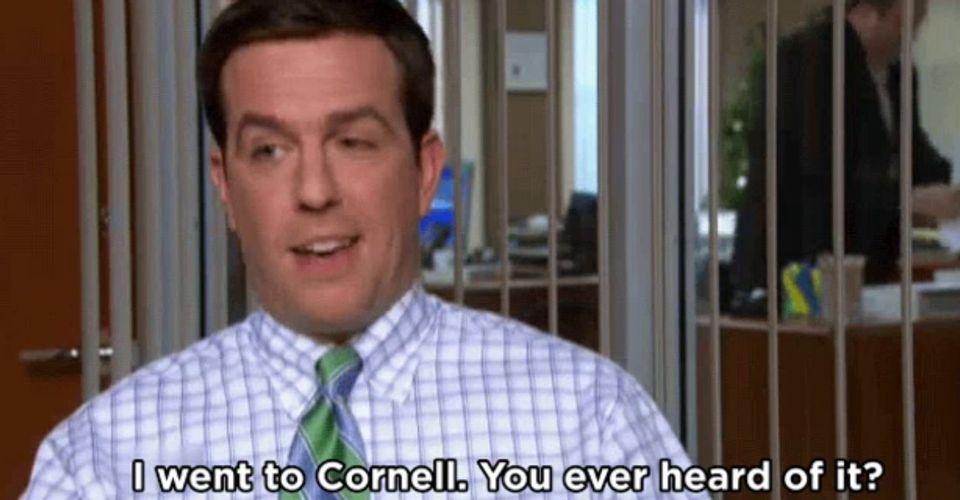
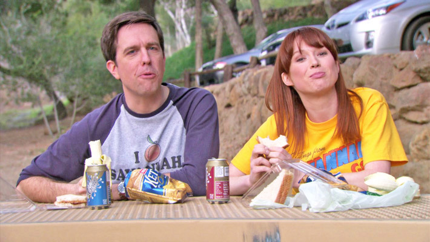

Andy Bernard

Andrew Bernard, portrayed by Ed Helms, is a salesman at Dunder Mifflin, an east coast paper supplier. He was introduced in season 3 as a salesman at Stamford and was one of the only charecters to survive the merge alongside fellow salesmen Karen Filippelli and Jim Halpert. Professionally he worked as a "bad salesman" for the majority of the series until he was chosen for Michael Scott's replacement. He is the regional manager of Dunder Mifflin Scranton for most of the seasons 8 and 9.

One of the largest recurring jokes in the office is Andy's school spirit for his college Cornell. He is very insecure and seeks approval, which can be tied to the relationship he has with his family. He is the disappointment that has caused severe emotional damage for Andy. He reveals that his parents originally named him Walter Jr., but after his baby brother was born when he was 6, his parents felt that the brother better represented the Walter Jr. name. Andy has dealt with serious anger issues since his charecters debut in season 3. He has never had luck romanticly and also never had any meaningful reciprocated friendships.

One of his longest and most serious relationship came when Angela decided to "revenge date" him to get back at Dwight for euthanizing her cat Sprinkles. However, Angela and Dwight quickly get back together unbeknownst to Andy. He eventually proposes, and she begrudgingly says yes, although they break up soon after.

Another failed relationship comes with the arrival of Erin Hannon. Erin arrives in Season 5 to replace Pam after she switches to sales. Andy immediately likes her but wants her to make the first move. They both unsuccessfully try to hint to each other that they would like the other to ask them out. In Season 6 in the episode "Murder," Andy finally asks Erin out, but because of miscommunication, the date gets called off. In "The Delivery," Andy asks Erin out on a fax, and she gleefully excepts. The date for the rest of the season until the episode "Secretary's Day" Michael reveals that Angela and Andy had been engaged, and she dumps Andy. In Season 7, Erin dates Gabe much to Andy's dismay, he continuously asks her out, but she is dedicated to Gabe. In Season 8, Andy dates Jessica, but once Erin moves to Florida, he realizes he still loves her and drives to Florida to win her back. Sadly at the start of Season 9, Andy decides to go sail around the world and doesn't ask Erin to join him. She sees this as him continuing his selfish patterns, and when he gets back, he breaks up with him and starts dating Pete.